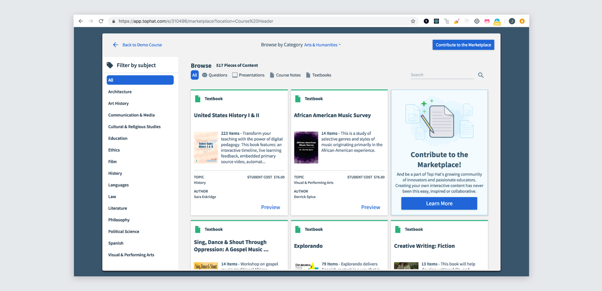
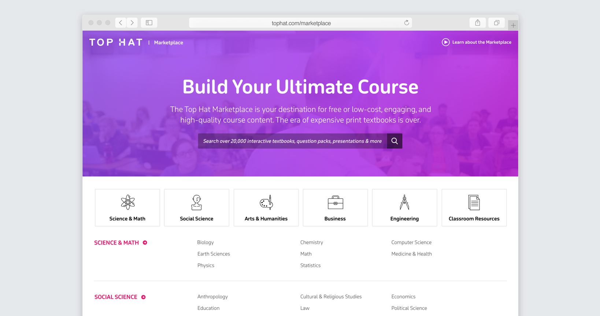
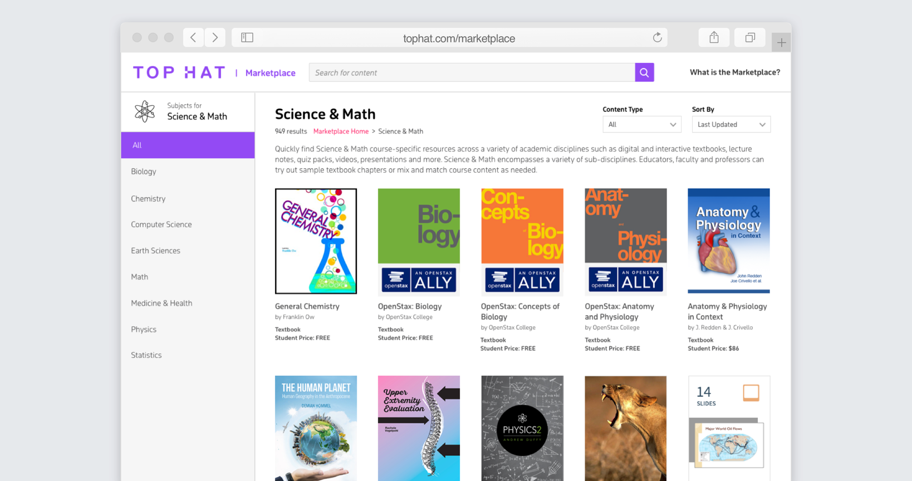
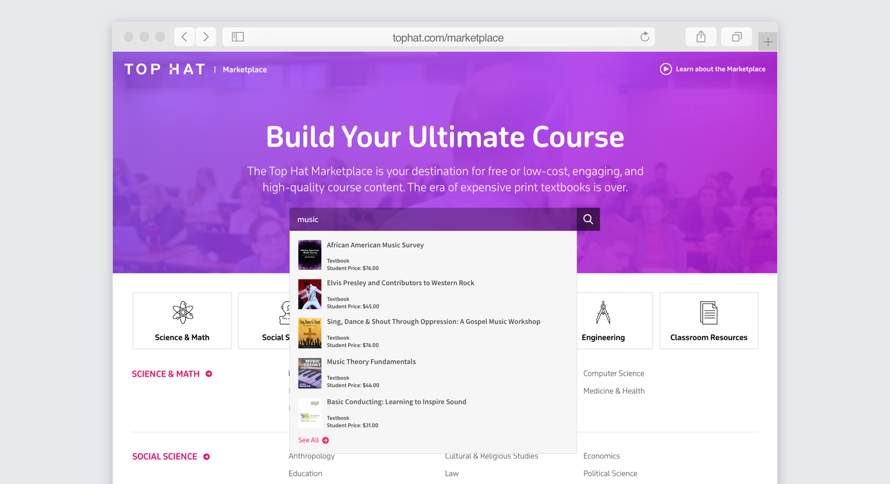
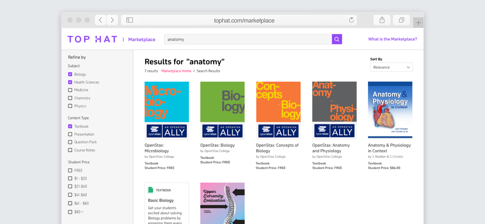
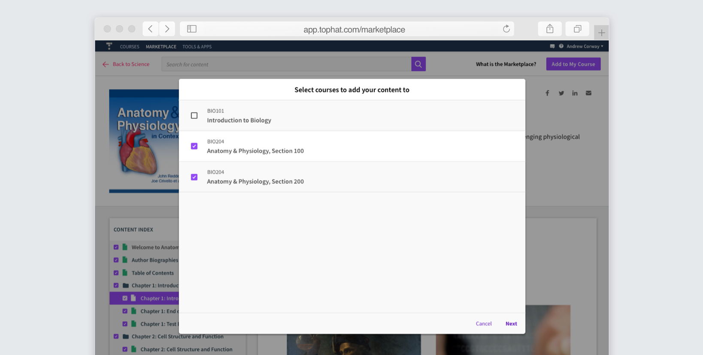
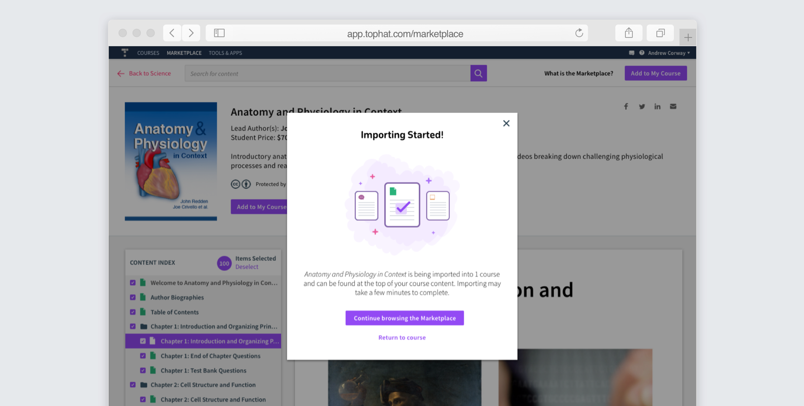
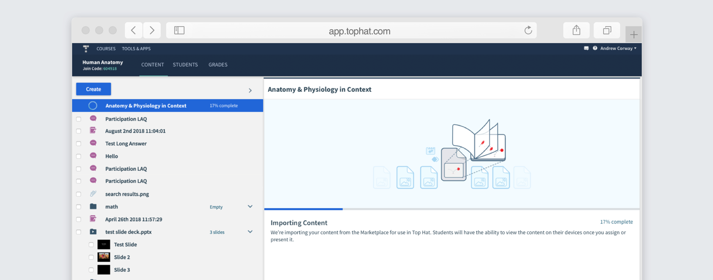
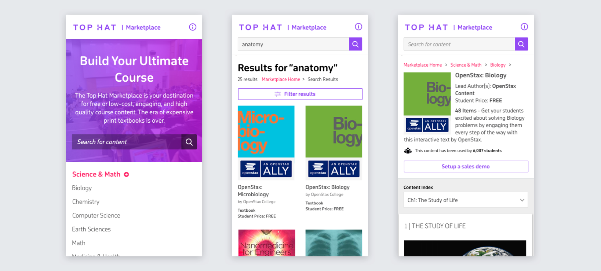

Top Hat
Marketplace
The Top Hat Marketplace is a place for people to discover our content offering, including textbooks, slides, and question packs. There's both an external facing marketplace, with the goal to appeal to new customers, and an internal marketplace where existing customers can import supplementary material. Prior to this project, an old internal marketplace existed, but not an external one. The goal was to create one marketplace service that met both internal and external needs. The Top Hat Marketplace can be viewed live at tophat.com/marketplace.
User Tests on Old Internal Marketplace
I created a user testing plan (see it here) and ran it with 5 post-secondary educators on usertesting.com. Primarily, we observed users struggling to navigate. This provided valuable insight into how professors expect to be able to navigate to find a textbook.
We also saw that the search was inadequate and that importing content took too long. It would be much better if importing could happen asynchronously in the background.
Working with Marketing
Since demand generation is a key purpose of the external marketplace, this project was a close collaboration with the Marketing department, particularly when it came to SEO optimization. They also tested out variations of the textbook landing pages using various analytics including heat mapping. I was primarily responsible for the home page, user flows, etc, while they were responsible for the content on the landing pages.
Home Page
At the top is a hero video playing, which can be expanded to view in its entirety to learn about Top Hat's content offering. On top, is an emphasis on search, since we found that profs are usually looking for something specific when in the market for a new textbook, or looking to add new content to their course.
Below, are links to domains and more specific subjects. Educators usually only teach within one domain, with perhaps a couple subjects, so it made sense to immediately and prominently filter the content this way, rather than highlighting featured content that may provide no relevance to the user.
Subject Pages
The idea is that the user can browse by categories and narrow down to more specific subjects. They can easily switch between the specific subjects. To go to a different subject category, they would have to go back to the home page though. This was chosen because it's highly unlikely that professors will be teaching in two completely different domains.
Search
A lot of emphasis was placed on improving search, since our users are often looking for something specific and use search to find it. Hence, I placed the most emphasis on search on the home page.
On the search results page, users can further refine by subject, content type, and price.
Content Page
The content pages are mostly designed by Marketing's design team, and they ran a lot of tests to optimize for conversion. Our most popular textbooks have extra information about them, chosen by Marketing. I was responsible for the top bit and the content preview. The point of conversion is to book a sales demo, but they can also preview the content from this page as well. In the internal marketplace, existing customers can read all of the content.
Importing Content
With the new internal marketplace, we were looking to improve the importing experience. Previously, users could only choose 1 course to import to. They would also have to wait while it imported, which can take quite some time. Now, when the user clicks "Add to Course", a modal opens up where they can select multiple courses if they wish.
The user then selects whether the content is optional or mandatory, with mandatory being selected by default.

They're then told that importing has begun.
When they go back into their course, it shows that the content is importing and the progress. They're able to continue using Top Hat while this happens, which was not previously possible.
Mobile
I also had to design it responsively for mobile, some of which is shown below.
